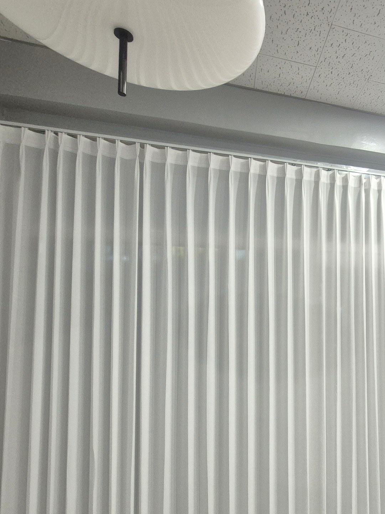
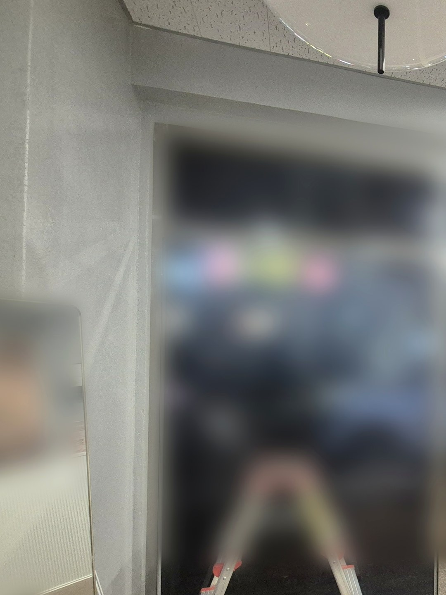
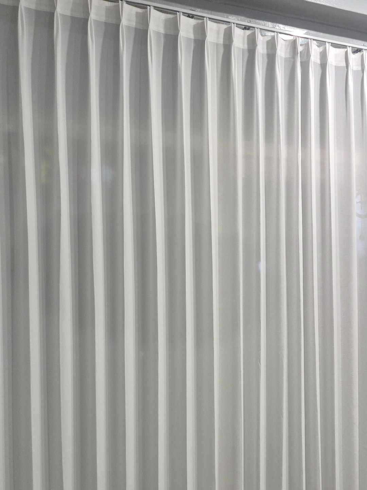
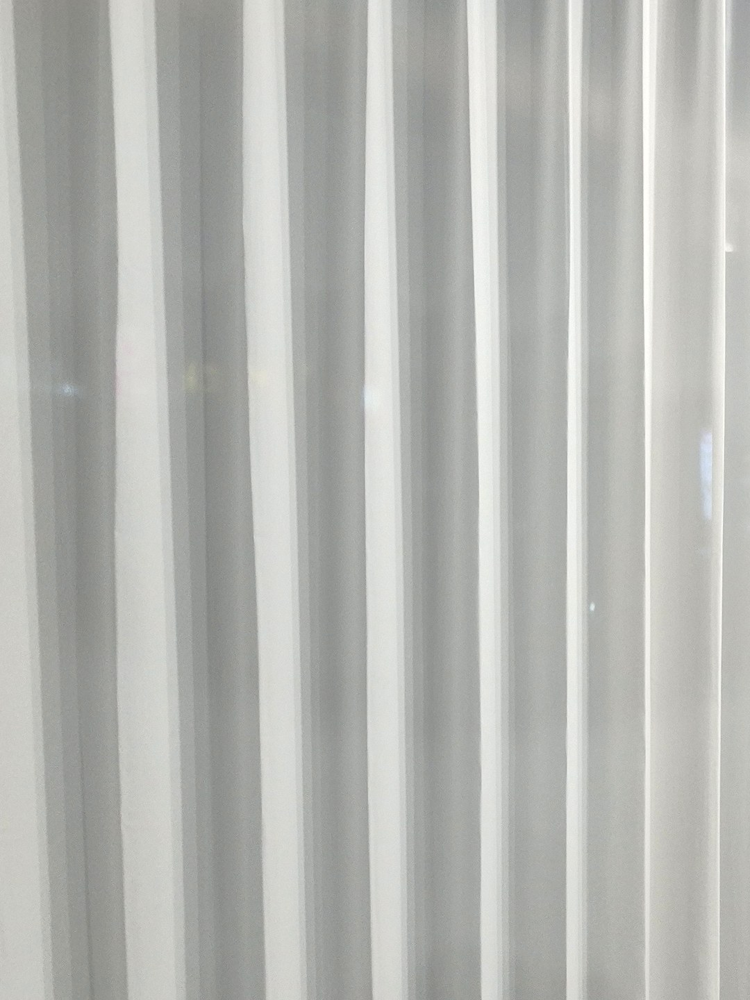
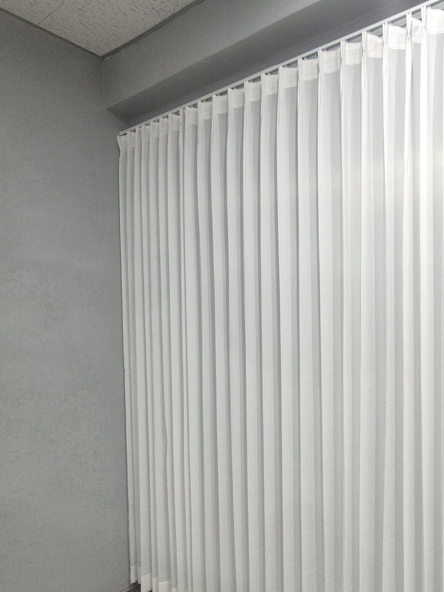

2026년 11월 3일 시공
영덕 상가
유리 전면 도톰쉬폰 두배나비주름 형상기억 커튼 시공후기

이번 현장은 영덕에 있는 상가입니다.
매장 한쪽 면이 유리문과 유리창으로 되어 있었습니다.
길을 걷는 사람 눈높이에서 매장 안쪽이 그대로 보이는 구조였습니다.
가리되, 답답해지지 않게

매장은 손님이 들어오고 싶게 보여야 하는 곳입니다.
암막처럼 두꺼운 원단으로 막아 버리면 시선은 끊기지만,
밖에서 보면 문을 닫은 가게처럼 보이기 쉽습니다.
그래서 빛은 통하고 안쪽 모습은 흐려지는 쉬폰을 골랐습니다.
얇은 쉬폰보다 한 단계 도톰한 원단이라, 낮에도 안이 덜 비칩니다.
두배나비주름과 형상기억을 함께 쓴 이유

두배나비주름은 창 폭의 두 배 가까이 원단을 써서 주름을 잡는 방식입니다.
원단이 넉넉하니 커튼을 다 펼쳐도 주름이 납작해지지 않습니다.
넓은 유리 면을 한 장의 천으로 덮어도 밋밋하지 않은 이유입니다.

여기에 형상기억 가공을 더했습니다.
주름이 위에서 아래까지 같은 폭으로 떨어지도록 잡아 주는 가공입니다.
매장 커튼은 하루에도 여러 번 여닫히는데, 그래도 선이 흐트러지지 않게 하려는 뜻입니다.
작업은 영업이 끝난 저녁에

설치는 고객님이 원하신 대로 저녁 늦은 시간에 했습니다.
장사하는 시간에 사다리를 펴면 손님 동선이 막히기 때문입니다.
따솜은 매장 시공이면 날짜와 함께 작업 가능한 시간대를 먼저 여쭙니다.
상가 커튼을 알아보실 때
솔직히 말씀드리면, 쉬폰은 밤에 매장 안 불을 켜면 밖에서 실루엣이 조금 비칩니다.
낮의 시선 가림과 분위기가 목적이라면 잘 맞지만,
밤에도 완전히 가려야 한다면 다른 원단을 함께 보셔야 합니다.
유리 면 전체가 나오게 찍은 사진과 영업시간을 함께 보내 주시면
원단과 작업 시간을 같이 맞춰 대략적인 견적을 알려 드립니다.